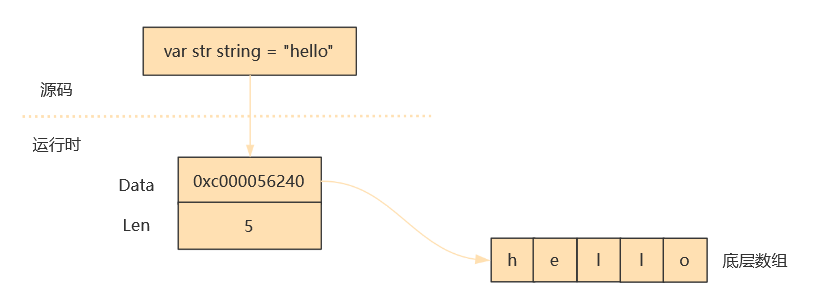

基本数据类型
Go是一种强类型的静态编译语言，类型是高级语言的基础。有了类型高级语言才能对不同的类型抽象出不同的运算，编程者才能在更高的抽象层次上操纵数据，而不用关注具体存储和计算细节。
Go内置七个基本数据类型(20个子类型)
- 布尔类型
- 整型
- 浮点型
- 复数
- 字符
- 字符串
- 错误类型
1.0. 布尔预声明类型
布尔类型关键字是bool，布尔类型只有两个值:true和false
true和false是GO内置的两个预声明标识符
var ok bool
ok = true
或者
ok := true // 自动推测类型 短类型声明
布尔类型和整型不能相互转换
var a = bool
a = 1 // error 1 是整型字面量
比较表达式和逻辑表达式的结果都是布尔类型数据
var b = bool = (x > y) && (x > 0)
if和for语句的条件部分一定是布尔类型的值或表达式****
if a < = b {
print(b)
else{
print(a)
}
for ;true //等价于C语言的while
}
声明的布尔类型变量如不指定初始化值，则默认为false
var b = bool // b is false
1.1. 整型
Go内置了12种整数类型
不同类型的整型必须进行强制类型转换
var a int = 1
var b int32 = 2
b = a // error
整型支持算术运算符和位操作，算术表达式和位操作表达式的结果还是整型
var a int = (1+2)*3
var b int = 1000>>2
1.2. 浮点型
浮点型用于表示包含小数点的数据，GO内置两种浮点型，float32和float64
- 浮点型数字面量会被自动类型推断为float64类型 （var b := 10.00）
- 计算机很难进行浮点数的精确表示和存储，因此两个浮点数不应该使用==或者!=进行比较操作，高精度科学计算应该使用math标准库
1.3. 复数类型
Go内置两种复数类型，complex64 和 complex128 ，复数在计算机里面使用两个浮点数表示，实部加虚部
var value1 complex64 = 3.1 + 5i
value2 := 3.1 +6i
Go有三个内置函数处理复数
var v = complex(2.1,3) // 构造一个复数
a := real(v) // 返回复数的实部
b := image(v) // 返回复数的虚部
1.4. 字符串
Go语言将字符串作为一种原生的基本数据类型，字符串的初始化可以使用字符串字面量
var a = 'hello,world'
字符串是常量，可以通过类似数组的索引访问字节单元，但是不能修改某个字节的值
var a = 'hello,world'
b := a[0]
a[1] = 'a' //error 因为字符串是常量，不允许被修改
字符串转换为切片[]byte(s)，数据量较大时要慎用，每转换一次都需要复制内容
a := 'hello,world'
b := []byte(a)
字符串尾部不包含NULL字符
字符串类型底层实现是一个二元的数据结构，一个是指针指向字节组的起点，另一个是长度
// StringHeader is the runtime representation of a string.
// It cannot be used safely or portably and its representation may
// change in a later release.
// Moreover, the Data field is not sufficient to guarantee the data
// it references will not be garbage collected, so programs must keep
// a separate, correctly typed pointer to the underlying data.
type StringHeader struct {
Data uintptr
Len int
}
string 类型其实是一个"描述符"，它本身并不真正存储字符串数据，而仅是由一个指向底层存储的指针和字符串的长度字段组成的。下面直观地展示了一个 string 类型变量在 Go 内存中的存储：

基于字符串创建的切片和原字符一样指向相同的底层字符数组，一样不能修改，对字符串的切片操作返回的子串依然是string，而非slice
a := 'hello,world'
b := a[0:4]
c := a[1:]
d :a [:4]
字符串和切片的转换：可以转成字节数组或转成Unicode的字数组
a : 'hello,world'
b := []byte(a)
c := []rune(a)
字符串的运算
a := 'hello,world'
b := 'hahahah'
c := a + b //字符串拼接
len(a) //内置函数len()获取字符串长度
支持循环遍历数组
for i:=0;i<len(a);i++{
fmt.Println(a[i])
}
遍历rune数组
for i,v : range d{
fmt.Println(d[i])
}
1.5. rune 类型
Go语言内置两种字符类型:byte的字节类类型，另一种是表示Unicode编码的字符rune
rune在Go内部是int32的别名，占用4个字节
Go语言默认字符编码就是UTF-8类型的，如果需要特殊的编码转换，需要使用Unicode/UTF-8标准包